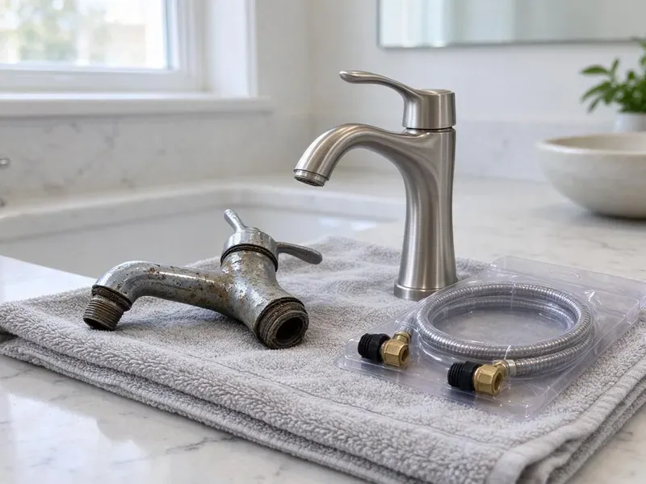

Sewer Replacement in Monroe, LA
When your sewer line fails in Monroe, LA, you need a fast and reliable solution. Beau's Plumbing is here to provide expert sewer replacement services.
- Fast, Reliable Service
- Permits and Inspections Handled
- Upfront Pricing
- Trenchless Pipe Bursting

Facing Sewer Line Issues? Get Professional Replacement in Monroe, LA.
We show you the camera footage so you can see the damage for yourself.
Your Trusted Partner for Sewer Replacement in Monroe, LA
Beau's Plumbing handles permits, utility locating, excavation and final inspection for sewer replacement. We install cleanouts so future maintenance is simpler.
Our expertise includes:
- Diagnose and replace all types of sewer line damage.
- Install long-lasting PVC, ABS, and cast iron sewer pipes.
- Upgrading old clay or cast iron pipes to modern PVC.

Additional Plumbing Replacement Services in Monroe, LA
When repairs are no longer enough, our replacement services in Monroe, LA deliver durable upgrades that restore full performance.


Customers
Why Choose Beau's Plumbing for Sewer Replacement in Monroe, LA?
We focus on efficient, minimally invasive solutions to get your sewer system operating smoothly with minimal disruption to your daily life.
- Code Compliant, We install proper slope, cleanouts and connections to code.
- Advanced Tools, We use modern diagnostic tools like sewer cameras to accurately pinpoint issues and determine the best replacement strategy for your home.
- Licensed Experts, Our plumbers are fully licensed, insured, and highly trained in all aspects of sewer system repair and replacement.
Citywide Coverage
Whether your sewer runs under a driveway, patio or mature trees, we serve every part of Monroe. We plan the least disruptive method for each property.
Experienced Team
Each member of the Beau's Plumbing team is trained in the latest sewer line technologies and safety protocols, guaranteeing a professional and reliable replacement in Monroe.
Safety-First Approach
We ensure proper site preparation, shoring, and backfill procedures to prevent future issues and maintain structural integrity. All work is performed to the highest safety standards, offering peace of mind for every homeowner in Louisiana.
Trusted Certified Monroe Plumbing Services Professionals
At Beau's Plumbing, we take pride in providing certified plumbing services throughout Monroe, LA. Backed by leading industry credentials, our experienced plumbers combine technical skill with genuine customer care. Whether it is repair, installation, or maintenance, we follow strict safety and quality standards to deliver long-lasting results you can trust.
Call Us Now PHCC Plumbing Contractor Recognition
PHCC Plumbing Contractor Recognition Better Business Bureau (BBB) Accreditation
Better Business Bureau (BBB) Accreditation Angi Certified Pro
Angi Certified Pro ISO 9001 Quality Management Certification
ISO 9001 Quality Management CertificationProfessional Sewer Replacement Services in Monroe, LA
Emergency Sewer Replacement in Monroe, LA
A collapsed sewer line can cause sewage backups into your home. Call (504) 317-6869 for emergency service. We inspect, locate the break and plan repairs fast. Temporary measures may restore flow until replacement. Fast response limits damage.

Foundation Protection during Sewer Replacement in Monroe, LA
Low-lying areas have a high water table and sinking ground, which can cause sewer lines to sag, crack, or separate over time. Soil movement can cause foundation shifts, which in turn can damage sewer lines. Our replacement process in Monroe, LA takes foundation integrity into account. We plan excavations carefully and ensure proper soil compaction and backfill to prevent future issues that could impact both your new sewer line and your home's foundation. We use careful methods to protect your property.
Sewer Scope Inspections for Replacement in Monroe
Before any replacement work begins, our team performs thorough sewer camera inspections. This allows us to visually assess the condition of your existing sewer line, pinpoint the exact location and nature of the damage, and determine the most effective replacement strategy. This diagnostic step is crucial for accurate estimates and effective solutions in Monroe.
Cast Iron Sewer Replacement in Monroe
Cast iron sewer pipe can corrode from the inside, creating rough surfaces and holes. Scale buildup snags debris and causes clogs. We replace cast iron with PVC or HDPE. This restores flow and eliminates corrosion. Many homes built before 1975 have cast iron lines.
Open-Trench Sewer Replacement in Monroe, LA
Some lines have severe sagging, wrong slope or are too shallow for trenchless methods. In these cases, open-trench replacement is the right option. We excavate, remove the old pipe and install new PVC with proper bedding. We restore the trench once it passes inspection. This method allows full correction of slope issues.
Trenchless Sewer Replacement Options in Monroe, LA
When appropriate, trenchless sewer replacement offers a less invasive alternative to traditional digging. Methods like pipe bursting or pipe lining allow us to replace or repair your sewer line with minimal excavation, often only requiring two access points. This can save your lawn, driveway, and landscaping from major damage, making it a popular choice for homeowners in Monroe who want to preserve their property's appearance. We'll assess if your sewer line is a good candidate for this advanced technique.
Under-Slab Sewer Replacement in Monroe
Many homes are built on slab foundations with drain lines underneath. When these lines fail, replacement requires tunneling or rerouting. We evaluate options to minimize impact on your home. Rerouting through walls or attic space is sometimes possible for branch lines. We explain the cost and disruption of each option.

Trenchless Pipe Bursting in Monroe
Pipe bursting pulls a new HDPE pipe through the old line while breaking the old pipe apart. It requires only small access pits at each end. This protects landscaping, driveways and patios. It works well for clay, cast iron and Orangeburg pipe. Most jobs are completed in one day.
Sewer Replacement Near Me in Monroe, LA
Our team is always close by, ready to dispatch to your location in Monroe for a thorough assessment of your sewer line issues. We pride ourselves on quick response times and effective solutions, ensuring that your sewer replacement project is handled efficiently and professionally from start to finish.
If you are searching for sewer replacement near me, you need a local team with the proper equipment. Beau's Plumbing serves Monroe with camera inspection and trenchless replacement. We can schedule fast for urgent problems.
Beau's Plumbing at a Glance
- Licensed and insured plumbers serving Monroe, LA
- 24/7 emergency service with same-day scheduling
- Upfront, flat-rate pricing before work begins
- 4.8-star rated by 578+ Louisiana customers
Monroe Map
Monroe Information
- Population
- 46,616
- Area codes
- 318/343/903
- Service area
- Monroe and communities within 40 miles
- Nearby
- Alexandria, Bossier City, Shreveport, Baton Rouge
With shifting soils and many older homes in Monroe, sewer replacement is a critical service for maintaining proper drainage and preventing costly foundation issues caused by leaking pipes.
Expert Services
Trust our professionals for reliable Beau's Plumbing solutions in Monroe, LA.
Our Specialized Plumbing Services in Monroe, LA
At Beau's Plumbing, we provide a complete range of plumbing services across Monroe, LA. From leak detection to full system installations, our team ensures fast, precise, and affordable service for both residential and commercial properties. Explore our core services below:


How Our Sewer Replacement Process Works in Monroe, LA
From the initial call to the final inspection, we ensure a seamless and professional experience for every sewer replacement project.
Request a Quote
Contact Beau's Plumbing at (504) 317-6869 to schedule an initial consultation and receive a detailed, no-obligation quote for your sewer replacement needs. We'll discuss your concerns and schedule an inspection.
Thorough Inspection
Our expert plumbers will conduct a comprehensive sewer camera inspection to accurately diagnose the problem and determine the best replacement method for your Monroe property.
Permit & Plan
We handle all necessary permits and develop a detailed plan, ensuring compliance with Monroe codes and limiting disruption during the sewer line replacement.
Frequently Asked Questions About Sewer Replacement in Monroe
Sewer line replacement costs in Monroe, LA can range significantly, typically from $4,000 to $25,000 or more, depending on factors like the length of the line, depth, pipe material, chosen method (traditional vs. trenchless), and excavation complexity. A full diagnosis is required for an accurate estimate. We provide upfront, transparent pricing after a thorough inspection.
Tree roots are a major cause of sewer line damage. Low-lying areas have a high water table and sinking ground, which can cause sewer lines to sag, crack, or separate over time. Shifting soil can crack pipes, and tree roots, attracted to the moisture and nutrients, will work into these cracks, growing inside the pipe and causing severe blockages and even collapses.
Modern PVC and HDPE pipes have tight joints that resist roots. Proper installation greatly reduces risk.
For sewer replacement, we primarily use durable and long-lasting materials like PVC (polyvinyl chloride) and ABS (acrylonitrile butadiene styrene) pipes. These materials are resistant to corrosion, tree root intrusion, and chemical damage, offering a significantly longer lifespan compared to older clay or cast iron pipes commonly found in Monroe homes. We select the best material for your specific property and local conditions.
Beau's Plumbing provides a solid warranty on our sewer replacement services, covering both parts and labor. The specific duration and terms will be plainly outlined in your service agreement, offering you peace of mind with your investment in Monroe.
Sewer line replacement is a complex and hazardous job that should only be performed by licensed and experienced professionals. It involves excavation, working with potentially contaminated materials, understanding plumbing codes, and operating heavy equipment. Attempting a DIY replacement can lead to serious health risks, code violations, and even more costly damage to your property. It is highly recommended to hire a professional plumbing company like Beau's Plumbing.
Many policies exclude gradual wear. Some offer service line coverage. Check with your insurance company.
Key signs include frequent backups or clogs in multiple drains, gurgling noises from toilets, sewage odors in your yard or basement, unusually lush or wet spots in your lawn, and sudden dips or sinkholes in your yard. A sewer camera inspection can confirm the exact issue.
What People Are Saying About Our Plumbing Experts?

James P.
Our commercial plumbing system had a leak under the sink, and Beau's Plumbing handled it professionally. The plumbers arrived quickly and restored everything without disruption to our customers.
Commercial Plumbing · Shreveport, LA
Sofia M.
Two new toilets installed in one visit, no mess left behind, and the tech even adjusted a faucet he noticed was dripping. Fair pricing and really friendly.
Toilet Installation · Shreveport, LA
Daniel K.
A pipe burst at 11 pm and they actually answered. The plumber showed up within the hour, shut everything down, and had us back to normal the next morning. Could not ask for more.
Emergency Plumbing · Shreveport, LA
Mark T.
When our office needed drain cleaning, Beau's Plumbing provided quick, reliable service. The plumber arrived on time and made sure every drain flowed perfectly before leaving. Very satisfied.
Drain Cleaning · Lafayette, LA
Patricia H.
We had a slab leak that two other companies could not find. Beau's Plumbing located it in under an hour, explained our options, and the price matched the quote to the dollar.
Slab Leak Repair · Alexandria, LA
Emily R.
I called Beau's Plumbing for plumbing repair, and the technician was fast, polite, and thorough. They explained the problem clearly and fixed it the same day. I will definitely hire them again. Highly recommended!
Plumbing Repair · Monroe, LA